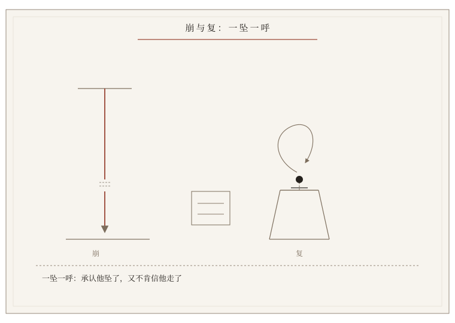

曲礼下 · 二·四十一 · 第 164 课
天子死，史书于策称「天王崩」；招魂时呼「天子复矣」。注「史书策辞」「始死时呼魄辞也」。
说什么事：同一件事，策上写「崩」，屋上呼「复」。两个字，两种方向。
落在哪一层：礼，兼及礼意。论死之辞与生之望。
为何编在此位：上节收于「不亲往则不名」，此节正说「不名」的极端处——君死，臣亦不呼其名。
【经】崩，曰「天王崩」。復，曰「天子復矣」。
【注】史書策辭。始死時呼魄辭也。不呼名，臣不名君也。諸侯呼字。
【疏】此谓告王者升假，而史书载于方策之辞。「崩」者，自上而坠下曰崩，王者死如从天坠下，故曰「崩」也。然崩通于坏败之称，则防墓崩，及《春秋》「沙鹿崩」是也。「复，曰，天子复矣」者，复，招魂复魄也。夫精气为魂，身形为魄。人若命至终毕，必是精气离形，而臣子罔极之至，犹望应生，故使人升屋，北面招呼死者之魂，令还复身中，故曰复也。若漫招呼，则无指的，故男子呼名，妇人呼字，令魂识知其名字而还。王者不呼名字者，一则臣子不可名君，二则普天率土，王者一人而已，故呼「天子复」，而王者必知呼己而返也。以例而言之，则王后死亦呼「王后复」也。崔灵恩云：「复所以呼天子者，凡王者皆感五精之帝而生，是天之子，今天王崩，是其精气还复于上，呼称天子，望更生之义。」
崩 疏「自上而坠下曰崩，王者死如从天坠下」。又通于坏败之称。
复 招魂复魄。疏「精气为魂，身形为魄」。
升屋北面 疏语。登屋，面北，呼死者之魂。
罔极 臣子哀痛无尽之意。
呼名呼字 常人之复，男子呼名，妇人呼字，令魂识其名而还。
天子死，策书称「天王崩」；招魂时呼「天子复矣」。
此节记两个字，方向相反。「崩」自上而下，是承认他坠了；「复」由外而内，是不肯信他真走了。同一天里，史官写崩，臣子在屋上喊复。礼把这两件事都留着。
第一层 崩之为辞 疏说「王者死如从天坠下」。此喻不取哀，取势：天塌下来，不是一个人死了。一字的重量，全在这个方向上。
第二层 复之为礼 人死，臣子「犹望应生」，故登屋招魂。此礼在今日已亡，其意仍在：一个不肯立刻承认的时刻，被礼安排成了程序。
第三层 不呼名 疏给两解：一为臣子不可名君，二为普天之下只此一人，呼「天子」他必知是呼己。常人之复须呼名，因魂无从辨识；天子不必，因天下只一人。此中有一层冷意，也有一层尊。
第四层 崔说之义 崔灵恩谓王者感五精之帝而生，是「天之子」，死则精气还复于上，故呼「天子」，望更生。此说近于纬书，疏存之而不驳。读礼者须知，汉唐注家于此类处，常并存而不裁。
与今日何干 讣告上的字与灵前的喊，从来不是一回事。前者给世人看，后者给自己听。
| 左 | 右 |
|---|---|
| 崩，曰天王崩 | 史书策辞，自上坠下 |
| 复，曰天子复矣 | 始死呼魄之辞 |
| 精气为魂，身形为魄 | 复者招魂还身 |
| 不呼名 | 臣不名君；天下只一人 |
| 诸侯呼字 | 与天子异 |
| 三称不同 | 策曰崩、复曰复、赴曰登假 |
画一纵一横两个字的方向：同一枚小点居于画心。自画心向下画一道粗竖线、线端作断口（示「崩」自上坠下）；自画心向上画一道细弧线、弧端向屋内折回（示「复」由外呼还）。两线之间另有一枚方牌（牌面空白）、牌上两道横线（示策书）。画心左侧画一座小屋的屋脊线，屋脊上立一个极简人形（只画肩与仰起的头）。不写文字。赭色只用在向下的那道断口上。
